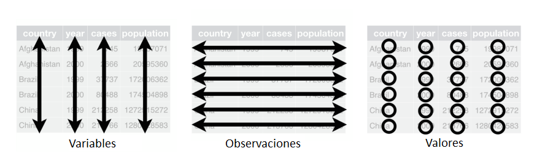
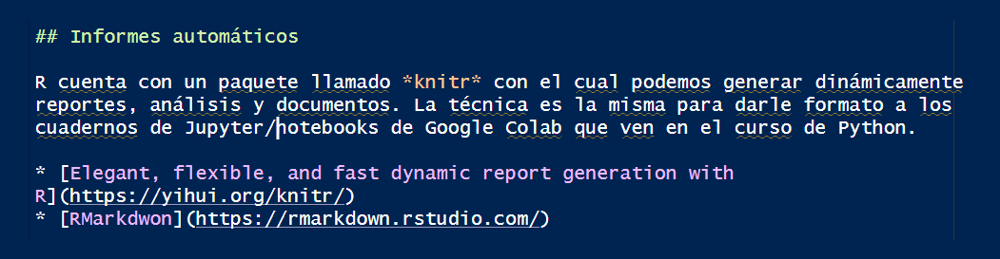
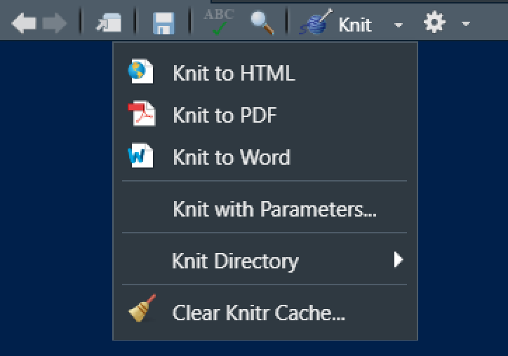
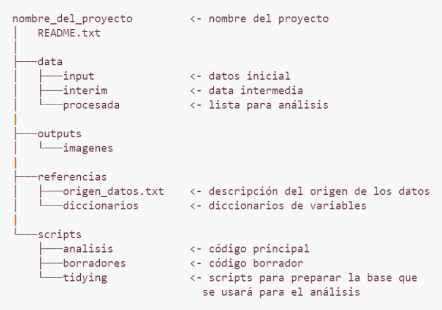

# Consulta la ayuda de la función específica
?function_name
# Consulta ayuda sobre un término o función con una búsqueda más amplia
??search_termProgramación básica en R
Introducción
¿Qué es R?
- R es un lenguaje de programación de acceso libre, inicialmente diseñado y utilizado para realizar análisis estadístico.
- R también es un programa que instalamos para interpretar el código que escribimos.
- No fue creado por ingenieros de software para el desarrollo de software, sino por estadísticos como un ambiente interactivo para el análisis de datos.
- Además de R trabajaremos con RStudio, un IDE (Integrated Development Environment) que funciona como una “máscara” sobre R, con más herramientas y facilidades.
- La forma en que trabajaremos en R será a través de secuencias de comandos, conocidos como script, que se pueden ejecutar en cualquier momento. Estos scripts sirven como un registro del análisis realizamos.
¿Por qué nos gusta?
- Se ejecuta en todos los sistemas operativos principales: Windows, Mac Os, UNIX/Linux.
- Los scripts y los objetos de datos se pueden compartir sin problemas entre plataformas.
- No solamente permite realizar análisis estadístico, tambien es posible capturar información de páginas web, crear aplicaciones web, procesar texto, entre otras cosas.
- La comunidad que lo usa es muy amplia (= muchísima ayuda e información en internet).
- Stackoverflow
- R-Universe
- R-Bloggers
- Towards Data Science
- Entre otros.
- Es muy versátil para la creación de gráficos.
- Tiene disponibles muchos paquetes para diferentes tipos de análisis.
- ¡ES GRATIS!.
Particularmente útil para
- Manejar, combinar, limpiar y reorganizar datos.
- Análisis estadístico, álgebra matricial, modelado, estadística avanzada.
- Usar un entorno gráfico poderoso para explorar datos o para publicar.
- Trabajar de forma reproducible a partir de scripts.
Advertencias
- La documentación a veces es muy técnica o muy compacta.
- No todo el código ha sido exhaustivamente testeado, es decir, no siempre hay garantías que las cosas funcionen.
- La curva de aprendizaje es más difícil que programas como SPSS o Minitab (frente a Python, Stata o SAS es similar).
Paquetes
Cuando varias funciones son desarrolladas con un objetivos similar se suelen agrupar en paquetes, los cuales son colaborativamente distribuidos de forma gratuita.
Para utilizar las funciones de un paquete es necesario instalar este paquete primero usando install.packages() y luego cargarlo en nuestro ambiente de trabajo usando library().
- Se instalan una vez y se llaman muchas veces.
- Lista de paquetes del CRAN
- Lista de paquetes de Bioconductor
- rdrr.io
El ecosistema tidyverse
Tidyverse es un conjunto de paquetes de R diseñados para hacer el análisis de datos más intuitivo y consistente. Estos paquetes comparten principios y sintaxis comunes, lo que permite trabajar de manera eficiente con datos estructurados. El núcleo de tidyverse incluye paquetes populares como:
- ggplot2: Para visualización de datos.
- dplyr: Para manipulación y transformación de datos.
- tidyr: Para ordenar y reorganizar datos.
- readr: Para leer datos en diferentes formatos.
- tibble: Para trabajar con tablas de datos mejoradas.
- stringr: Para manipulación de cadenas de caracteres.
- purrr: Para trabajar con programación funcional.
El enfoque principal de tidyverse es organizar los datos en un formato “ordenado” (tidy), donde cada variable es una columna, cada observación es una fila, y cada tipo de unidad observacional forma una tabla. Esto facilita tanto la manipulación como el análisis, haciendo que el flujo de trabajo sea más eficiente y claro.

Visualización usando ggplot
ggplot2 es un paquete específico dentro del ecosistema tidyverse para la visualización de datos en R. Está basado en la gramática de gráficos (grammer of graphics), lo que permite crear gráficos complejos a partir de componentes simples.
Con ggplot2, es posible construir gráficos declarando los diferentes elementos que lo componen (ejes, datos, geometrías, capas, colores, etc.) y combinándolos de manera flexible. A diferencia de otros enfoques, en lugar de especificar un tipo de gráfico desde el principio, en ggplot2 construyes los gráficos de manera incremental a través de capas.
Las extensiones de ggplot2 son paquetes adicionales que amplían la funcionalidad de ggplot2, permitiendo crear gráficos más complejos o personalizar las visualizaciones de manera más específica. Estas extensiones se construyen sobre la estructura básica de ggplot2 y ofrecen nuevas geometrías, temas, escalas, y otras características.
Algunas de las extensiones más populares son:
ggthemes: Proporciona una amplia variedad de temas predefinidos para personalizar el estilo de los gráficos, como temas inspirados en periódicos o plataformas como Excel o Stata.
ggplotly: Convierte gráficos de
ggplot2en gráficos interactivos utilizando la libreríaplotly. Ideal para visualizaciones dinámicas.gghighlight: Permite resaltar ciertas observaciones en un gráfico basado en una condición, sin necesidad de manipular manualmente los datos.
gganimate: Añade una dimensión temporal a los gráficos, creando animaciones para mostrar cómo los datos cambian con el tiempo.
Shiny
Shiny es un paquete de R que permite construir aplicaciones web interactivas de manera sencilla, sin necesidad de tener conocimientos avanzados de desarrollo web. Fue creado por RStudio y se utiliza principalmente para compartir análisis de datos y visualizaciones interactivas con otros usuarios a través de un navegador web.
Shiny combina el poder de R para análisis estadístico y visualización con herramientas de diseño web (HTML, CSS, y JavaScript), lo que permite crear aplicaciones dinámicas que responden a entradas del usuario, actualizando gráficos, tablas y modelos en tiempo real. Sus características principales son:
Interactividad: Los usuarios pueden modificar la entrada (input) y ver cambios instantáneos en la salida (output), como gráficos, tablas, o resultados estadísticos.
Flexibilidad: Permite integrar elementos HTML, CSS y JavaScript para mejorar la apariencia y funcionalidad de las aplicaciones.
Servidor y UI: Las aplicaciones en Shiny se estructuran en dos partes principales:
UI (User Interface): Define el diseño de la interfaz que el usuario ve, como botones, campos de entrada, menús desplegables, etc.
Server: Contiene la lógica y el procesamiento que ocurre cuando el usuario interactúa con la interfaz.
Shiny es ampliamente utilizado en ciencia de datos para crear dashboards, herramientas de visualización y aplicaciones de análisis interactivo, y permite compartir análisis de manera efectiva con personas que no necesariamente conocen R.
Reportería
Los paquetes knitr, rmarkdown y quarto son herramientas complementarias en el ecosistema R para la creación de documentos reproducibles y la generación de informes. Cada uno de estos paquetes tiene una función específica, pero a menudo se utilizan juntos para producir documentos de alta calidad.
knitr
knitr se utiliza para integrar código R dentro de documentos de texto, permitiendo la generación de informes dinámicos. Se encarga de ejecutar el código R y mostrar los resultados (tablas, gráficos, etc.) directamente en el documento. knitr convierte los bloques de código R en resultados formateados y los inserta en el documento de salida, facilitando la creación de informes reproducibles.
- Características:
- Ejecución de código R y generación de resultados.
- Inserción de resultados en documentos de texto.
- Soporte para diversos formatos de salida a través de paquetes complementarios (como
rmarkdown).
rmarkdown
rmarkdown amplía la funcionalidad de knitr permitiendo la creación de documentos dinámicos y de presentación en varios formatos, como HTML, PDF y Word. Utiliza Markdown para estructurar el contenido del documento, lo que facilita la combinación de texto, código y resultados en un formato de salida estéticamente agradable.
- Características:
- Soporte para múltiples formatos de salida: HTML, PDF, Word.
- Uso de Markdown para la estructuración del texto.
- Integración con
knitrpara ejecutar y mostrar código R. - Opciones avanzadas para personalizar la apariencia y el contenido del documento.
quarto
quarto es una herramienta más reciente que ofrece una alternativa moderna y flexible a rmarkdown. Está diseñada para crear documentos reproducibles, informes y presentaciones, y se basa en un formato de archivo y un flujo de trabajo similar a rmarkdown, pero con mejoras en la funcionalidad y la integración con otros sistemas.
- Características:
- Soporte para la creación de documentos, presentaciones, libros y sitios web.
- Mejora en la compatibilidad con varios lenguajes de programación además de R, como Python.
- Facilita la integración de contenido y la creación de documentos reproducibles en un formato más moderno.
- Permite la creación de informes interactivos y contenido dinámico.
Estos paquetes se utilizan en conjunto para crear documentos reproducibles que combinan texto, código y resultados en un formato de salida atractivo y profesional. Mientras que knitr y rmarkdown han sido herramientas establecidas durante años, quarto representa una evolución en la creación de documentos dinámicos y reproducibles, con un enfoque más amplio y flexible.


RStudio
RStudio es un entorno de desarrollo integrado (IDE) para el lenguaje de programación R, diseñado para facilitar la escritura de código, la visualización de datos y la creación de informes reproducibles. Ofrece una serie de herramientas y características que mejoran la productividad y la eficiencia en el trabajo con R. RStudio es desarrollado por Posit.
Posit es una empresa social que desarrolla herramientas de código abierto para el análisis de datos y la ciencia de datos. Desde su cambio de nombre de RStudio a Posit en 2023, la empresa ha seguido comprometida con la misión de mejorar la accesibilidad y el impacto del análisis de datos a través de software libre y colaborativo.
Proyectos de RStudio
En RStudio, los proyectos son una característica que ayuda a organizar y gestionar el trabajo de forma estructurada y eficiente. Un proyecto en RStudio es un contenedor para archivos y configuraciones que se usan en un análisis o en una investigación específica. Aquí están algunas de las principales características y ventajas de utilizar proyectos en RStudio:
Características de los proyectos en RStudio:
Aislamiento del Entorno: Cada proyecto tiene su propio entorno de trabajo, con sus propios archivos, paquetes y configuraciones. Esto evita conflictos entre diferentes proyectos y facilita el manejo de múltiples análisis simultáneamente.
Directorio de Trabajo: Cuando se abre un proyecto, RStudio establece automáticamente el directorio de trabajo en la carpeta del proyecto. Esto significa que todos los archivos y datos se referencian con rutas relativas al proyecto, simplificando la gestión de archivos.
Configuración del Proyecto: Los proyectos guardan configuraciones específicas, como opciones de R y ajustes de paquetes. Esto incluye la posibilidad de establecer opciones como la versión de R, el directorio de datos, y configuraciones personalizadas.
Historial y Scripts: RStudio mantiene el historial de comandos y los scripts utilizados en cada proyecto, lo que permite una fácil recuperación y seguimiento del trabajo realizado.
Archivos de Proyecto: Los proyectos suelen incluir un archivo
.Rproj, que almacena la configuración del proyecto y ayuda a RStudio a identificar y abrir el proyecto correctamente. También puedes incluir otros archivos como scripts, datos, documentos, entre otros.Integración con Control de Versiones: Los proyectos pueden integrarse con sistemas de control de versiones como Git, facilitando la gestión de versiones y la colaboración en proyectos de análisis de datos.
Buenas prácticas
Al trabajar con R y en la programación en general, es importante seguir ciertas buenas prácticas para mantener el código limpio, eficiente y fácil de mantener. Aquí algunas recomendaciones clave:
Usar scripts
- Uso de scripts: Aunque es común ejecutar código directamente en la consola durante las primeras interacciones con R, es una buena práctica guardar el código en scripts. Los scripts permiten documentar y reutilizar el código de manera más organizada.
- Archivos
.r: Son los scripts de R tradicionales. - Archivos
.rmd: Archivos de R Markdown que combinan texto y código en un solo documento, permitiendo generar informes dinámicos. - Archivos
.qmd: Archivos de Quarto que también combinan texto y código, pero con una estructura más moderna y flexible.
- Archivos
Manejo de mensajes de advertencia y errores
- Copiar y buscar: Si encuentras mensajes de advertencia (
warning) o errores (error), copia el mensaje y realiza una búsqueda en Google, ChatGPT, o Gemini para encontrar soluciones. Estos recursos pueden ofrecer soluciones a problemas comunes y explicaciones detalladas.
Comentar el código
- Uso de comentarios: Añadir comentarios al código es fundamental para la comprensión y mantenimiento. Los comentarios se insertan anteponiendo el símbolo
#en la línea deseada.- Herramientas de asistencia: Utiliza herramientas como GitHub Copilot para obtener sugerencias de comentarios y documentación.
- Atajo de teclado: En RStudio, puedes usar el atajo
Ctrl+Shift+R(Windows/Linux) oCmd+Shift+R(Mac) para comentar o descomentar líneas de código de forma rápida.
Consultar la ayuda en R
- Uso de funciones de ayuda: R ofrece varias maneras de acceder a la documentación y ayuda sobre funciones y paquetes:
Por ejemplo:
?mean # Muestra la documentación para la función mean
??mean # Realiza una búsqueda sobre el término "mean" en la documentaciónEstas prácticas nos ayudan a mantener un flujo de trabajo eficiente y organizado, facilitando tanto el desarrollo como el mantenimiento de proyectos en R.
Creación de nuestro primer proyecto
- Abrir RStudio.
- Clic en File > New Project
- New Directory > New Project si queremos crear una nueva carpeta en nuestro equipo.
- Existing Directory si queremos alojar nuestro proyecto en una carpeta ya creada.
- Una vez creado el proyecto, podemos verificar que la ventana del programa se renombra y apunta a la carpeta donde está alojado.
- Clic en File > New File > R Script. En la ventana que se carga ya podemos empezar a ejecutar nuestro código.
- Descargamos la carpeta con algunos recursos para informes automáticos y los llevamos a nuestra carpeta de proyecto.
- Configuramos RStudio para que use la carpeta de proyecto como directorio principal.
- Iniciamos la programación.
